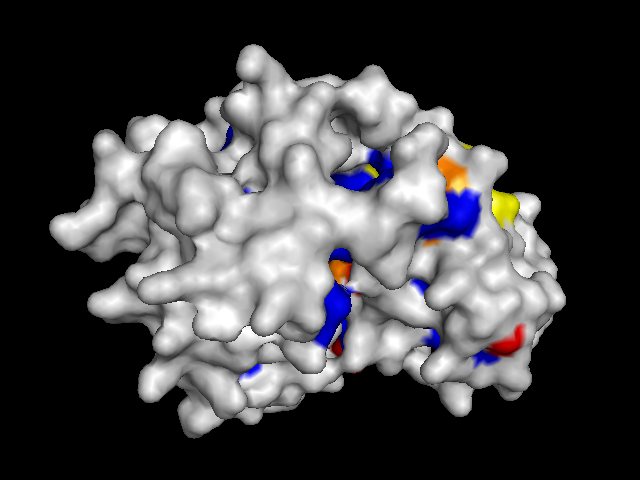
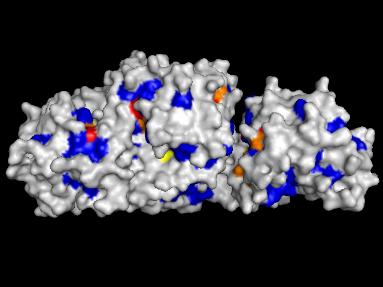
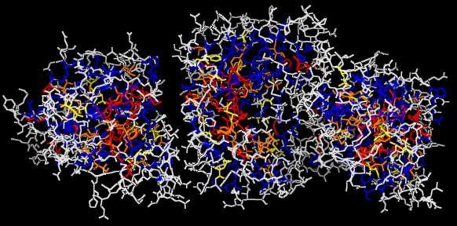

| Probable active sites? Image (a) shows YwtF with a highly conserved region (all red). It appears to be functionally important but lacks a substantial pocket. RacE as shown below in (c) and (d) does not show a highly conserved region or a substantial pocket. However, many highly conserved residues are present, as shown in (e) where RacE was rendered as lines using PyMOL. | |
 |
 |
| (a) YwtF front | (b) YwtF back |
|---|---|
 |
 |
| (c) RacE front | (d) RacE back |
|  | |
| (e) RacE front rendered as lines |